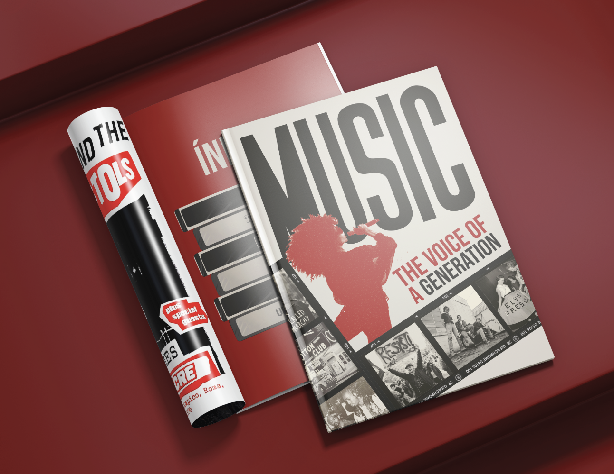

Editorial
Hola, este es mi archivo creativo. Elige una carpeta para explorar cada sección.
Portada: las tres carpetas apiladas. Toca una para abrir su sección.
01 · Tokens
Vino y beige como base, azul asociado a Proyectos y café para lectura. Códigos vigentes que sustituyen a los anteriores.
#4C050C#FBFCF0#94B1C8#1A090502 · Tipografía
Editorial para jerarquía, acento puntual y funcional para datos. Lo impreso en las carpetas se conserva tal cual.
{typography.display} 64px / Instrument Serif · ttf
Diseño que muestra universos
{typography.accent} 24px / New Kansas ExtraSwash · otf
Ingrid López — pestañas y etiquetas
{components.logo} sobre beige
{components.logo-on-dark} sobre vino
{typography.body} 16px / Area · otf
Fechas, roles, descripciones y navegación. Lectura cómoda.
03 · Espaciado y retícula
Base {spacing.base} 8px. Portada con encabezado, frase breve y tres carpetas superpuestas.
04 · Radios, formas y profundidad
Las carpetas originales viven en la portada. Aquí solo la guía de radios y acentos. Plano, sin sombras fuertes.
Formas · geometría {rounded.none}
05 · Componentes
La interacción por carpetas vive en la portada. Aquí la muestra de botones, enlaces y tarjetas.

06 · Reglas